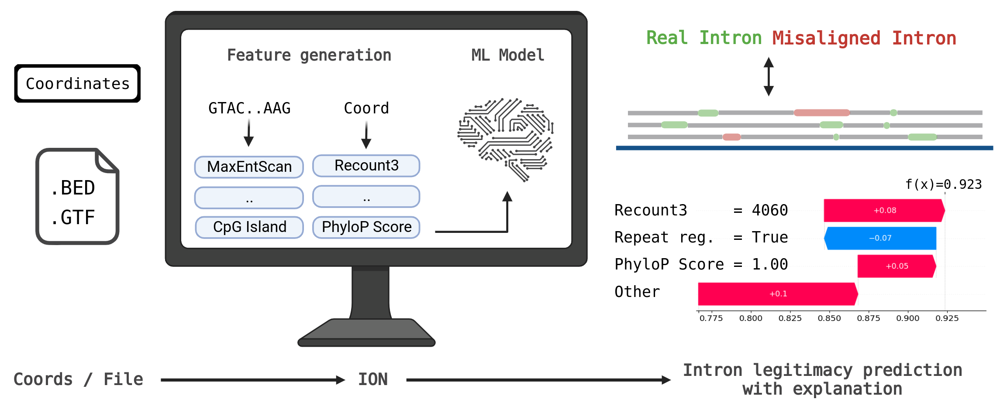
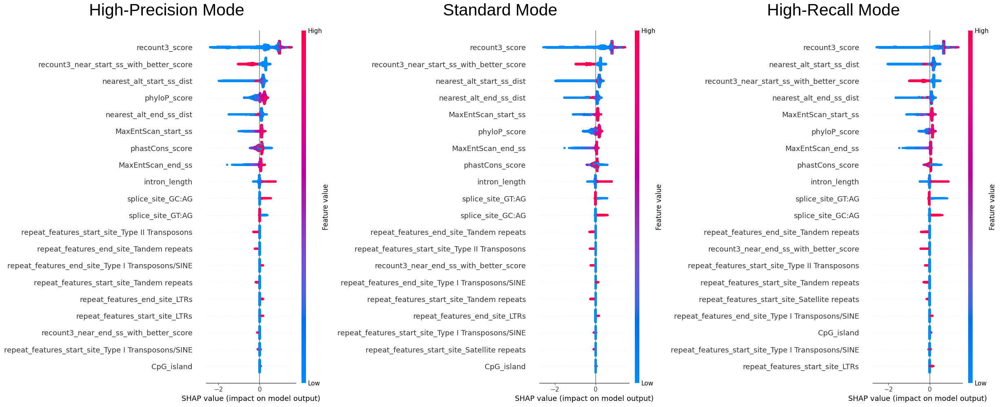
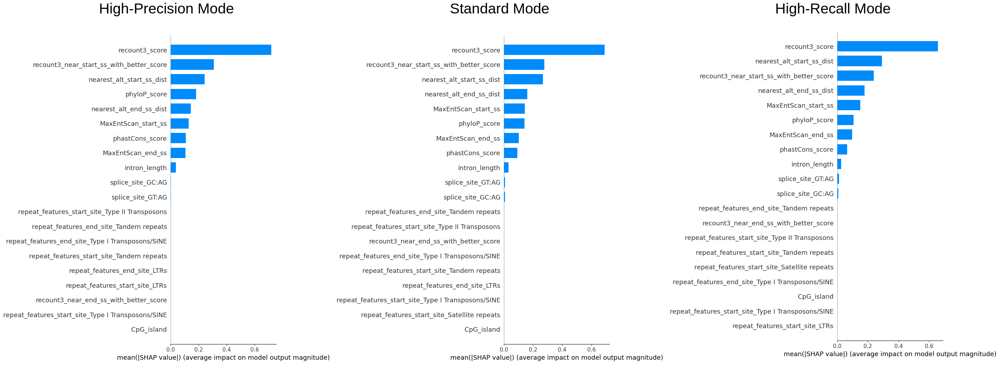
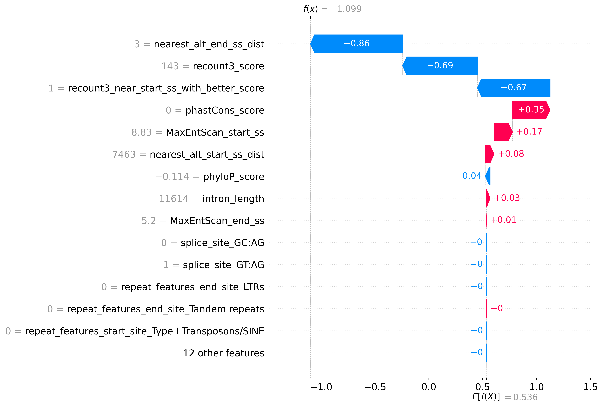

Google Summer of Code 2023:
Differentiating Real and Misaligned Introns with Machine Learning
To address issue that strict filters rejects most of the legitimate introns, we developed IntronOrNot (ION) - a machine learning to differentiate that predicts if the intron is real or misaligned. The model accepts coordinates, .bed, and .gtf file as input. The prediction script is easy to use and achieved comparable results to sequenced-based deep learning intron predictor. A standalone function that extracts intron from .gtf is also included.
Work Done
All the work done in this project including all the commits can be found at:
https://github.com/kennylam8/IntronOrNot/
https://github.com/EnsemblGSOC/IntronOrNot
The latest commit as of the submission of the GSoC final evaluation is: 5db1ff6
We documented the process of testing and building the model using Jupyter-Notebooks, all the notebooks can be found at the root directory of the Github repository
Table of Contents
- Organisation & Mentors
- Getting Started
- Background
- Training Set Preparation
- Feature Engineering
- Machine Learning Model
- Results
- Challenges, Limitations, and Future Work
- Conclusion
- Acknowledgements and Remarks
Organisation & Mentors
Genome Assembly and Annotation (European Bioinformatics Institute / EMBL-EBI)
Research Group
Ensembl - Genome Interpretation Teams
Mentors
Jose Gonzalez
Jonathan Mudge
Adam Frankish
Graphical Abstract

Created with BioRender.com
Getting Started
Installation
- Download the latest zipped script in
Releases - Install the required dependencies detailed below
Environment
- 32 GB of RAM or more is required for a large .bed file
- Multi-thread support is default to enabled with the Pandarallel library
Package Requirements
Please Note that this requirement is for the final ION script in Releases, not the notebooks\
biopython==1.81
matplotlib==3.5.2
numpy==1.25.0
pandarallel==1.6.5
pandas==2.0.3
pyBigWig==0.3.22
pyfaidx==0.7.2.1
scikit_learn==1.1.1
shap==0.41.0
tqdm==4.64.0
xgboost==1.6.2
Please Note that this requirement is for the ION script in Releases, not the notebooks\
Usage
Coordinate mode (1-based):
python3 ION.py --mode high-precision --type coord chr3 83979030 83990643 +
BED mode:
python3 ION.py --mode high-precision --type bed --file examples/example.bed
GTF mode:
python3 ION.py --mode high-precision --type gtf --file examples/example.gtf
IMPORTANT: ION can only evaluate intorns with canonical splice-site (GT:AG, GC:AG, AT:AC)
Background
Understanding the impact of genetic variation on disease requires comprehensive gene annotation. Human genes are well characterised following more than two decades of work on their annotation, however, we know that this annotation is not complete and that new experimental methods are generating data to help us towards the goal of complete gene annotation.
The advancement in the accuracy of long-read sequencing technology has allowed us to explore novel transcript variants of known genes. Preventing potentially wrong transcripts and gene annotation is essential to the science community as many rely on the annotation for decision-making. Automated workflow with a has been developed to minimise the time needed to verify and annotated those transcript variants. However, current workflows are developed using a very strict rule-set and hence many of the novel transcript variants were rejected. This project aims to address this issue by using machine learning to differentiate good quality but rejected transcripts, using it as a standalone classification filter or analysing the decision-making methods of the model and consequently improving the rule-set used in the automated workflow.
You can read more about the background of this project at: https://github.com/jmgonzmart/GSoC_ML_gene_annot
Project Goal
This project consists of the following deliverables and goals:
- Install/prepare the environment and repository for the project.
- Extract the GENCODE annotation data and featurize them into tabular format.
- Explore the addition of other features that might facilitate decision-making or machine learning model.
- Learn to generate an extended set of low-quality transcript or splice junction predictions.
- Develop a machine learning model that differentiate misaligned and real introns. The model should have low false positive rate.
- Perform and document the statistical analysis of the model to extract its most relevant features for decision-making.
- Run the final model on novel transcripts and produce a detailed report of the results.
Training Set Preparation
Positive Class Data
Relevant Notebook: 01
We used the GENCODE v44 (https://ftp.ebi.ac.uk/pub/databases/gencode/Gencode_human/release_44/) as our positive set. We used a script to extract all the introns out of the .gtf file.
Negative Class Data
We used two source for generating negative class data.
We have access to a previous gene annotators' manually reviewed data, the dataset contains ~11000 introns, after removing introns that are already accepted in current version, 403 negative introns were obtained.
To simulate how false intron data could be presented in real data, we ultilized PBSIM3 (Ono et al., 2022), a simulator for long-read sequencers that is capable to simulate both PacBio RS II continuous long reads (CLR) and Oxford Nanopore Technology (ONT) reads. We simulated the reads using GENCODE v44
Long non-coding RNA transcript sequencesandProtein-coding transcript sequencesRNA data. We simulated them using four different settings:- ONT single pass - protein coding genes
- ONT multi-pass - protein coding genes
- PacBio Iso-seq - protein coding genes
- ONT single pass - lcnRNA
The reads were then aligned to the human genome respectively using Minimap2 (Li, 2018), and intronic regions of all alignments were then extracted and compared against the current GENCODE annotation and those that were not in the current GENCODE annotation is treated as false/misaligned introns. About 110,000 false introns were obtained.
Feature Engineering
Features Tested
9 categories of features were generated:
- Recount3 score: Notebook 05
- Based on the data extracted from the intronic region of
recount3: summaries and queries for large-scale RNA-seq expression and splicing(Wilks et al.)
- Based on the data extracted from the intronic region of
- Repeat region: Notebook 06
- Check if any of the splice-sites lies in repeating regions.
- Antisense Exon: Notebook 07
- Distance of next nearest existing splice-site: Notebook 09
- Check the coordinate of both the donor and acceptor splice-site against current annotation (GENCODE v44) and calculate the distance between the splice site and the closest annotated splice-site nearby (excluding exact match).
- MaxEntScan score: Notebook 10
- Based on the script/methodology developed by Yeo and Burge -
Maximum entropy modeling of short sequence motifs with applications to RNA splicing signals
- Based on the script/methodology developed by Yeo and Burge -
- Basic sequence based feature: Notebook 11
- Calculates the GC content.
- Determines whether the sequence can be considered a CpG island based on the ratio of CpG dinucleotides and the GC content in the sequence.
- Calculates the intron length.
- Conservation scores: Notebook 12
- Calculate the splice-site conservation scores with the PhastCon and PhyloP conservation resources downloaded from the UCSC genome browser.
- Splice-site with better Recount3 score nearby: Notebook 13
- We look at 5nt further at both direction of the splice-site and see if there is a splice-site recorded in recount3 that has a better score
- Branch Point Prediction (BPP) score: Notebook 14
- Branch point prediction using BPP (Zhang el al.)
Feature Selection
Relevant Notebook: 17
To make the model easier to interpret, and improve its performance. We simplify the model using feature selection.
We intentionally drop some features that we learned from empirical knowledge from the annotators are unimportant, namely the strand and chromosome of the introns.
We performed feature selection using RFECV: Recursive Feature Elimination with Cross-Validation (RFECV) is a feature selection technique that aims to identify a subset of features that are most useful for making accurate predictions. It is an extension of Recursive Feature Elimination (RFE), which eliminates feature one by one according to their validation performance, RFECV incorporates cross-validation (5-fold were chosen) for evaluation.
We also dropped the sc feature which is generated by the BPP script, as it has relatively less importance (reflected by the RFECV result) and not easily interpretable, and also introns lesser than certain length could not obtain the sc feature, we decided to remove it.
24 features were chosen. Refer to the second last cell of Notebook 17 for more details.
Machine Learning Model
Model Architecture
We have tested different model architecture including Explainable Boosting Machine (EBM), RandomForest (RF), and more. We chose XGBoost as the model for this task for its good performance in internal validation.
Hyperparameter Optimisation
Relevant Notebook: 18
We chose the hyperparameter the XGBoost model using exhaustive grid searching with 3-fold cross-validation of the following parameter:
parameter_grid = {
'n_estimators': [50, 100, 150, 200],
'learning_rate': [0.01, 0.1, 0.2, 0.3],
'max_depth': [5, 6, 7],
'min_child_weight': [1, 3, 5],
'subsample': [0.8, 0.9, 1.0],
'colsample_bytree': [0.8, 0.9, 1.0]
}
The best parameters were combinations with learning_rate = 0.1, however after consideration our model has limited
training data, a learning rate with 0.1 will have a potential problem of overwriting, after evaluating different
combinations with internal validation, we opted to use {'colsample_bytree': 0.9, 'learning_rate': 0.01, 'max_depth': 7, 'min_child_weight': 1, 'n_estimators': 200, 'subsample': 0.8},
which is the highest combination with learning_rate = 0.01.
Training
We trained three separate model with the same parameter except for the scale_pos_weight. According to the xgboost
documentation, it "control the balance of positive and negative weights, useful for unbalanced classes. A typical value
to consider: sum(negative instances) / sum(positive instances)", after internal cross-validation, we settled on:
- High-Recall Mode
scale_pos_weight = sum(negative instances) / sum(positive instances)
- Standard Mode
scale_pos_weight = sum(negative instances) / sum(positive instances) / 2
- High-Precision Mode
scale_pos_weight = sum(negative instances) / sum(positive instances) / 4
Evaluation Metrics
The model's performance should be evaluated using metrics that consider both classes, metrics such as MCC should be emphasised. We will evaluate our model using these metrics:
- Matthews Correlation Coefficient (MCC)
- Accuracy (Acc)
- Balanced Accuracy (BAcc)
- Precision
- Recall
- False Positive Rate (FPR)
- This is espicially important because we need to ensure the model does not produce false positive
- Area Under Receiver Operating Characteristic Curve (AUROC)
Feature Importance using SHAP (SHapley Additive exPlanations)
One of the primary objectives of this project is to gain a deeper understanding of the significance of various features, knowledge that could be leveraged to enhance existing filters. Gaining insights into the model's performance is not merely beneficial but crucial. A more interpretable model could substantially contribute to more informed and effective decision-making processes.
We sampled 50% of the data (~240k entries) to examine the overall importance of features and how the value of features are affecting the model.\ The color reflects the value of the feature, the order of the features (vertically) is the importance of it, and the x-axis reflects the impact on the model (SHAP value).
  We can see that recount3 score is the most important feature and from the first plot we can see that the model definitely favours entries with high recount3 score. One interesting finding is that phyloP or the phastCon score is also an important feature, as it was not incorporated in the original filters used by the annotation team, this could also be considered.
Prediction Explanation
You can export and view the explanation for the prediction using --shap true option, it is also defaulted to true in coordinates mode
Example plot:

Results
10-Fold Stratified Cross Validation
Standard Deviation (SD) of the folds are presented as the value after ±, only the first s.f. are shown in SD.
| Accuracy | B. Accuracy | FPR | MCC | AUROCscore | Precision | Recall | |
|---|---|---|---|---|---|---|---|
| ION (High-Recall Mode) | 0.949 | 0.937 | 0.083 | 0.836 | 0.980 | 0.982 | 0.956 |
| ION (Standard Mode) | 0.933 | 0.933 | 0.068 | 0.800 | 0.980 | 0.984 | 0.933 |
| ION (High-Precision Mode) | 0.894 | 0.917 | 0.046 | 0.722 | 0.980 | 0.989 | 0.881 |
We can see that adjusting the scale_pos_weight parameter of the model allows us to lower to FPR (while sacrificing the overall predictive performance (indicated by MCC and Recall))
External Validation & Benchmark
Manually annotated lncRNA test-set
| Acc | B. Acc | FPR | MCC | AUROCscore | Precision | Recall | |
|---|---|---|---|---|---|---|---|
| ION (High-Recall Mode) | 0.860 | 0.724 | 0.443 | 0.361 | 0.858 | 0.952 | 0.890 |
| ION (Standard Mode) | 0.742 | 0.784 | 0.165 | 0.351 | 0.851 | 0.978 | 0.732 |
| ION (High-Precision Mode) | 0.429 | 0.673 | 0.028 | 0.210 | 0.855 | 0.992 | 0.374 |
| Filters (Intropolis) | 0.366 | 0.633 | 0.040 | 0.171 | 0.633 | 0.987 | 0.306 |
| Filters (Recount3) | 0.701 | 0.654 | 0.403 | 0.191 | 0.654 | 0.946 | 0.711 |
| SPLAM1 | 0.483 | 0.674 | 0.091 | 0.205 | 0.831 | 0.674 | 0.674 |
- True if both Donor score and Acceptor score >= 0.5 else false, actual predicted value is calculated by using the min(donor_score, acceptor_score).
GENCODE v46 Newly Added Introns
As only single class is available (accepted/positive), only accuracy is included
| Accuracy | |
|---|---|
| ION (High-Recall mode) | 0.844 |
| ION (Standard Mode) | 0.708 |
| ION (High-Precision Mode) | 0.601 |
| SPLAM1 | 0.772 |
- True if both Donor score and Acceptor score >= 0.5 else false
Summary
Table 1 provides a comparative evaluation of different machine learning models designed to classify long non-coding RNAs (lncRNAs) based on a manually annotated test set. Among the models, ION in High-Recall Mode stands out for its superior performance across multiple metrics: it boasts the highest accuracy (0.860), Matthews Correlation Coefficient (0.361), and AUROC score (0.858). It also excels in recall with a rate of 0.890, suggesting that it is particularly effective at correctly identifying positive cases. However, this high recall comes at the expense of a higher False Positive Rate (FPR) of 0.443, indicating that the model also incorrectly classifies a considerable number of negative cases as positive.
ION in Standard Mode achieves the highest Balanced Accuracy of 0.784 and maintains a relatively low FPR of 0.165, offering a balanced performance between sensitivity and specificity. ION in High-Precision Mode excels in precision with a score of 0.992 and has the lowest FPR of 0.028, but lags in recall and overall accuracy. Filters (Intropolis) and Filters (Recount3) generally perform lower across most metrics, while SPLAM1 shows moderate results. Each model appears to have its strengths and weaknesses, providing options to choose based on the specific requirements of an lncRNA classification task.
Table 2 provides comparison of models. As only accepted data are available in GENCODE, we can only compare their accuracy, we can see that the high-recall mode of ION has the best accuracy, while other both the standard and high-precision mode suffered from relatively low accuracy compared to SPLAM, which achieved 77.2%.
Challenges, Limitations, and Future Work
There are numerous challenges in this project. Most notably is the imbalance of the training data, as the majority of the data are obtained by extracting introns from annotation, this makes the majority of the train-set "positive". This causes a huge problem at the beginning, although we dampen it with the generation of false data, the ration of positive vs negative is still around 4:1, a better model could be built with the generation of more false introns, presumably sets accumulated by annotators or a more comprehensive simulation of introns using the method utilised in this project.
The performance of the machine learning model is limited to the training data, although recount3 is the most comprehensive dataset available to this data, in the future, model should be retrained and adjusted in accordance to the newer data.
ION is built on many experimental and empirical data, like recount3 score, repeat regions, and conservation scores. On the other hand, there are tools that predicts introns using the sequence alone, such as SpliceAI and SPLAM. Future work could expan on integrating both sequence-based intron prediction and experimental data. Additionally, the recent development in protein structure predict might allow us to incorporate structural prediction of the actual protein (analysis the legitimacy of introns using the final structure of the protein).
Conclusion
We have successfully developed a model ION that predicts the legitimacy of an intron. The performance of ION is comparable to deep learning methods such as SpliceAI and SPLAM, while still being interpretable. This would allow annotators and users to use this program to evaluate introns and understand the decision behind it. Many improvements could be make to improve this model including generating higher quality "negative" introns and further tuning and experimenting with other features and models.
Acknowledgements and Remarks
I am truly grateful for the unwavering support I've received throughout the course of this project from the mentors. Despite an initial slow start, my mentors have been incredibly supportive, providing invaluable guidance through daily communication and during our regular meetings.
From the moment I was accepted into the program to its near completion, I have been continually awed and humbled by the wealth of knowledge and skills I've gained through this experience. My primary focus has traditionally been in the realm of computational bio/chemistry, which made the opportunity to delve into an unfamiliar domain through this project all the more exhilarating for me.